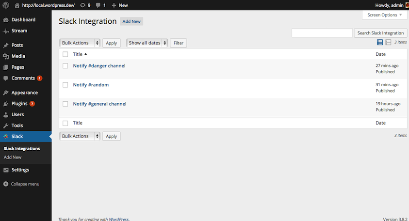
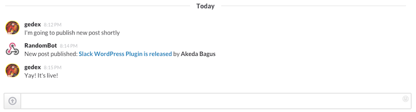

Slack
This WordPress plugin allows you to send notifications to Slack channels when certain events in WordPress occur.
View the Project on WordPress gedex/wp-slack
View the Project on GitHub gedex/wp-slack
Table of Contents
Overview
This WordPress plugin allows you to send notifications to Slack channels when certain events in WordPress occur.
By default, there are two events that can be sent to Slack:
- When a post is published
- When there's a new comment
It's possible to add more events using slack_get_events filter. Here's an example to add new event when a user is logged in:
add_filter( 'slack_get_events', function( $events ) {
$events['user_login'] = array(
'action' => 'wp_login',
'description' => __( 'When user logged in', 'slack' ),
'message' => function( $user_login ) {
return sprintf( '%s is logged in', $user_login );
}
);
return $events;
} );
The new event will be shown on integration setting and if enabled anytime a user is logged in you'll get the notification in Slack.
Screenshots
Followings are screenshots to give you an idea how it looks.

Integrations list. Yes, you can add more than one integration.
{kind=link}

Edit integration screen.

Your channel get notified when some events occur.
{kind=link}
Video showing plugin in action
Not enough for screenshost? Here's the video showing the plugin in action:
Installation
- Upload Slack plugin to your blog's
wp-content/plugins/directory and activate. - Add new Incoming WebHooks service in your Slack, the URL is
https://<SUBDOMAIN>.com/services/new/incoming-webhook(replace<SUBDOMAIN>with your Slack's subdomain). Once created, note the URL of the service (you'll set it into integration entry in your WordPress). - Go to Slack menu in your WordPress to add the integration (make sure you're logged in as an Adminstrator).
Changelog
0.3.0
- Add activate / deactivate link in row actions
- More columns in integration list table
0.2.0
- For default "When a post is published" and "When there is a new comment" events, limit the post type to "post"
- Don't send notification if message evaluates to false
- Plugin's banner
- Put Slack URL in README
0.1.0
Initial release